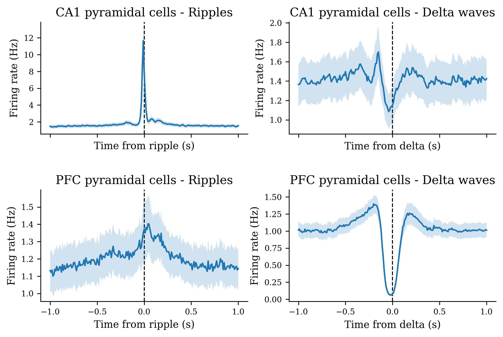
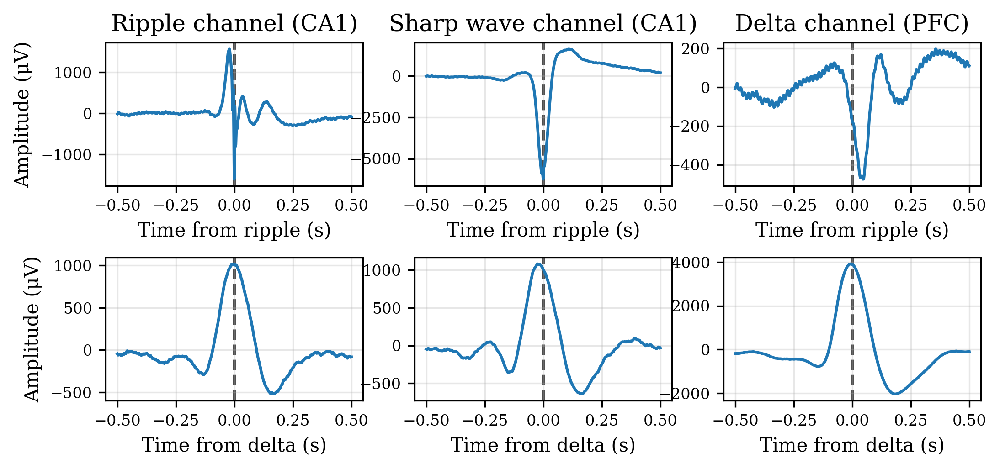
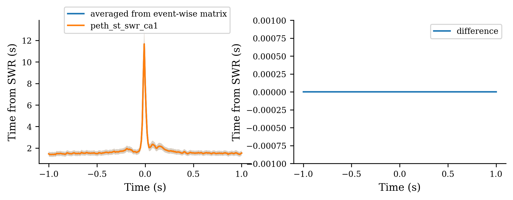
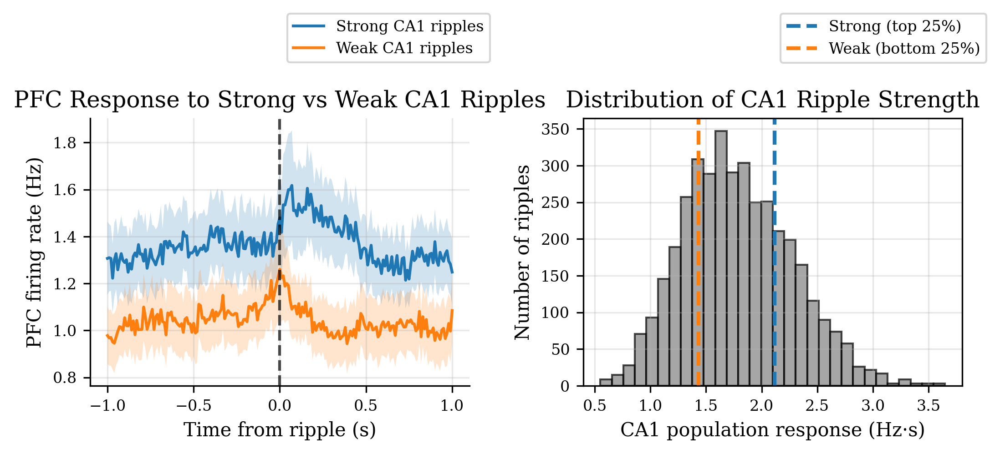
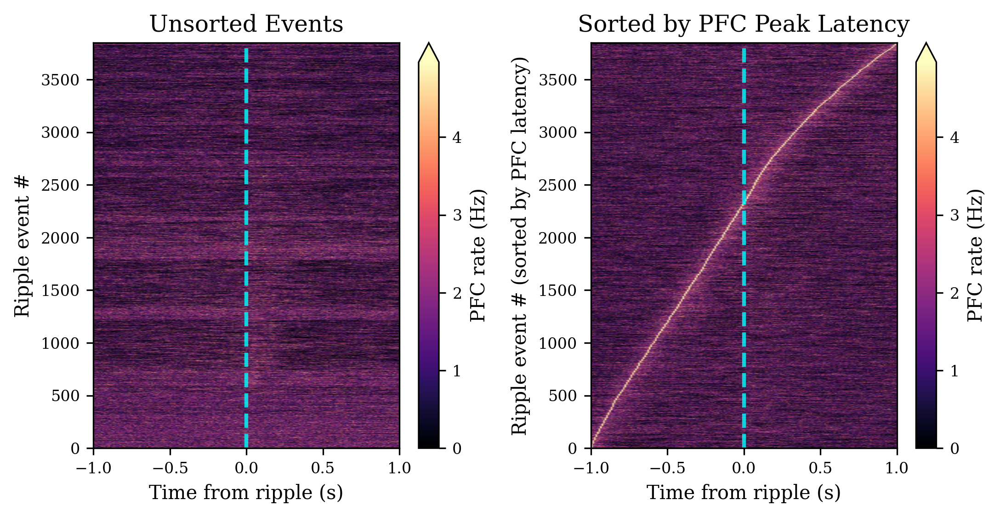
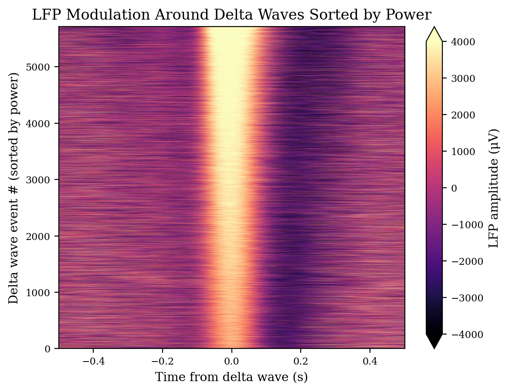
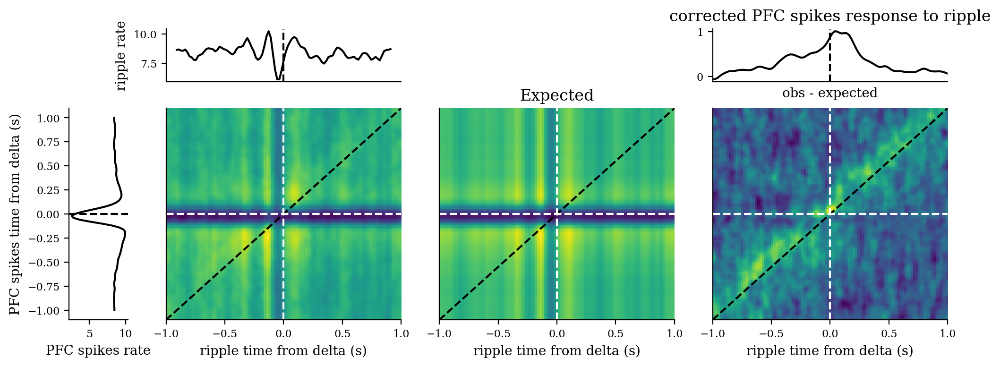
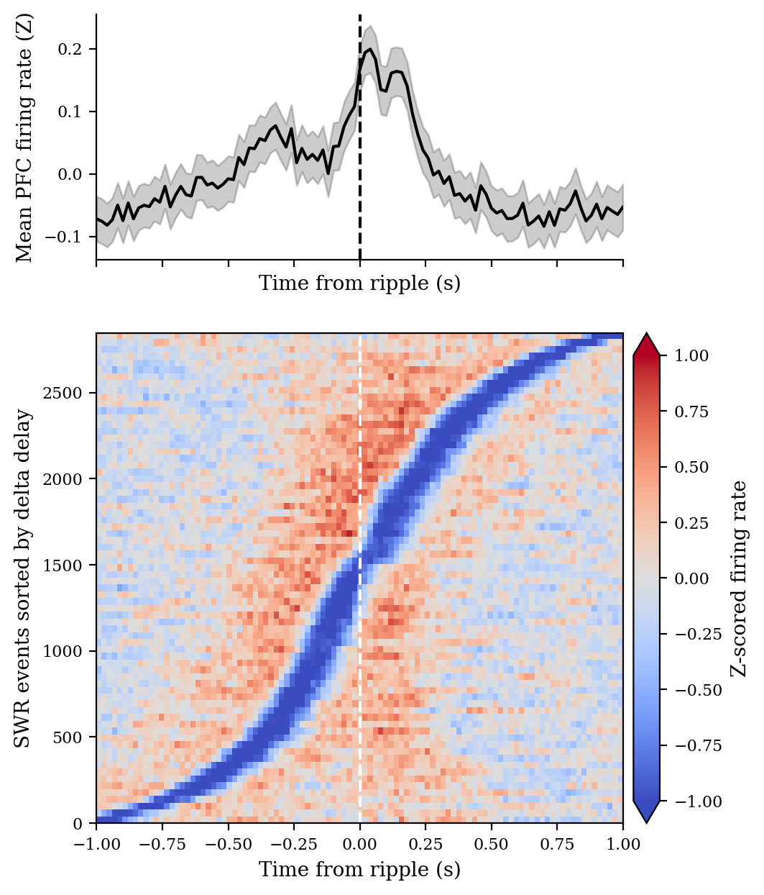

Peri-Event Time Histogram (PETH)¶
Overview: The Power of peth¶
The peth function is a unified, high-level interface for computing peri-event time histograms (PETHs) across all major nelpy data types. Instead of writing separate analysis code for different neural signal types, peth handles the complexity seamlessly:
What makes peth powerful:
- Universal input handling: Works with spike trains, events, continuous signals (LFP, position, accelerometer), and more
- Batch processing: Automatically aligns and aggregates multiple signals/cells without manual iteration loops
- Data type flexibility: Accepts nelpy objects (SpikeTrainArray, EventArray, AnalogSignalArray, PositionArray), binned data (BinnedSpikeTrainArray, BinnedEventArray), and numpy arrays
- Consistent output: Always returns a DataFrame with intuitive time and signal dimensions for straightforward visualization and analysis
- Zero boilerplate: Focus on your neuroscience question, not data structure conversions
This tutorial demonstrates the versatility of peth using real neural data from a single recording session, showing how the same function elegantly handles spike rasters, continuous signals, and complex multi-region analyses.
Import Required Libraries¶
This tutorial shows how to compute peri-event time histograms (PETHs) for multiple data types using peth and how to visualize the results with a real session.
import matplotlib.pyplot as plt
import nelpy as nel
import numpy as np
import pandas as pd
import seaborn as sns
import neuro_py as npy
from neuro_py.io import loading
from neuro_py.process.peri_event import peth
npy.plotting.set_plotting_defaults()
%matplotlib inline
%config InlineBackend.figure_format = 'retina'
Load Sample Neural Data¶
We load real data from a single session: HMC1 on day 8. This session contains: - Spike trains from CA1 and PFC pyramidal cells (well-characterized, prevalent populations) - Event timestamps for ripples (sharp-wave ripples) and delta waves (slow oscillations during sleep) - Continuous signals (LFP) recorded simultaneously from multiple brain regions
By loading from a single basepath, we ensure temporal alignment across all data types (spikes start at t=0, events logged with absolute timestamps, LFP sampled continuously).
Session basepath: S:\data\HMC\HMC1\day8
# Set session path
basepath = r"S:\data\HMC\HMC1\day8"
# Define LFP channels of interest:
# - ripple_channel (261): CA1 pyramidal layer (ripple-rich)
# - sharp_wave_channel (282): CA1 region (source of sharp waves)
# - delta_channel (53): PFC region with delta oscillations during NREM
ripple_channel = 261
sharp_wave_channel = 282
delta_channel = 53
# Load spike trains with metadata
# Filter: only include cells recorded from CA1 and PFC with putative type 'Pyr' (pyramidal)
st, cell_metrics = npy.io.load_spikes(
basepath, brainRegion="CA1|PFC", putativeCellType="Pyr"
)
# Create binary masks for brain region separation
ca1_idx = cell_metrics.brainRegion.str.contains("CA1").values
pfc_idx = cell_metrics.brainRegion.str.contains("PFC").values
# Load ripple events (sharp-wave ripple complexes)
# Ripples are high-frequency oscillations (100-200 Hz) that occur during sleep and offline states
ripples = npy.io.load_ripples_events(basepath, return_epoch_array=False)
ripples = nel.EventArray(
ripples.peaks.values, fs=1250
) # Convert ripple peaks to nelpy EventArray for analysis
# Load delta wave events (1-4 Hz oscillations during NREM sleep)
deltas = npy.io.load_events(basepath, epoch_name="deltaWaves", load_pandas=True)
deltas = nel.EventArray(deltas.peaks.values, fs=1250)
# Load behavioral state annotations (wake, NREM sleep, REM sleep)
# We'll restrict LFP analysis to NREM-only epochs for state consistency
sleep_states = npy.io.load_SleepState_states(basepath, return_epoch_array=True)
# restrict ripples and deltas to NREM epochs only
nrem_epochs = sleep_states.get("NREM")
ripples = ripples[sleep_states["NREMstate"]]
deltas = deltas[sleep_states["NREMstate"]]
# Load continuous LFP signal
# First, read XML file to get channel count and sampling rate
nChannels, fs, fs_dat, shank_to_channel = loading.loadXML(basepath)
# Then, load LFP data at specified frequency (typically downsampled from raw)
# Returns: lfp (nTimepoints × nChannels), ts (time vector)
lfp, ts = loading.loadLFP(basepath, n_channels=nChannels, frequency=fs, ext="lfp")
WARNING:root:ignoring events outside of eventarray support
WARNING:root:ignoring events outside of eventarray support
Define PETH Parameters¶
We define a temporal window and bin width for the peri-event time histogram: - window = [-1, 1] sec: Symmetric window captures ±500 ms around each event (standard in neuroscience) - bin_width = 0.01 sec (10 ms): Provides millisecond-level resolution for spike timing relative to events
These parameters are well-suited for detecting rapid modulations in firing rate around behavioral/physiological events.
window = [-1, 1]
bin_width = 0.01
Calculate PETH for Spike Data¶
Analysis Goals¶
We quantify how spike rates change around two key event types: 1. Ripples (SWR): Sharp-wave ripple complexes—transient, high-frequency bursts associated with memory consolidation 2. Delta waves: Slow oscillations (1-4 Hz) that structure neural activity during NREM sleep
We compare two brain regions: - CA1: Hippocampal subregion (spatial representation, memory) - PFC: Prefrontal cortex (decision-making, planning, working memory)
This comparison reveals how the two regions coordinate during distinct brain states.
Method¶
For each unit and event type, we compute the peri-event time histogram (PETH): a estimate of firing rate modulation time-locked to discrete events. The result shows mean firing rate ± SEM around each event.
# restrict spike trains to NREM epochs only for state-specific analysis
st_nrem = st[sleep_states["NREMstate"]]
# Compute PETH for all pyramidal cells aligned to ripples
# Returns DataFrame with shape (n_time_bins, n_units)
peth_st_swr = peth(
st_nrem,
ripples.data[0, :],
bin_width=bin_width,
window=window,
)
# Compute PETH for all pyramidal cells aligned to delta waves
peth_st_delta = peth(
st_nrem,
deltas.data[0, :],
bin_width=bin_width,
window=window,
)
# Index by brain region for visualization
peth_st_swr_ca1 = peth_st_swr.iloc[:, ca1_idx]
peth_st_swr_pfc = peth_st_swr.iloc[:, pfc_idx]
peth_st_delta_ca1 = peth_st_delta.iloc[:, ca1_idx]
peth_st_delta_pfc = peth_st_delta.iloc[:, pfc_idx]
# Create 2×2 subplot grid: rows=regions (CA1, PFC), columns=event types (ripples, deltas)
fig, axes = plt.subplots(
2,
2,
figsize=npy.plotting.set_size("paper", 1, subplots=(2, 2)),
sharex=True, # Share x-axis for easy comparison
dpi=150,
)
plt.subplots_adjust(wspace=0.2, hspace=0.5)
# Plot PETH results: plot_peth_fast() shows mean ± SEM
npy.plotting.plot_peth_fast(peth_st_swr_ca1, ax=axes[0, 0])
npy.plotting.plot_peth_fast(peth_st_delta_ca1, ax=axes[0, 1])
npy.plotting.plot_peth_fast(peth_st_swr_pfc, ax=axes[1, 0])
npy.plotting.plot_peth_fast(peth_st_delta_pfc, ax=axes[1, 1])
# Add vertical line at event time (t=0) for visual reference
for ax in axes.ravel():
ax.axvline(0, color="k", ls="--", lw=1, zorder=-10) # Event marker
ax.set_ylabel("Firing rate (Hz)")
# Label axes by event type
axes[0, 0].set_xlabel("Time from ripple (s)")
axes[0, 1].set_xlabel("Time from delta (s)")
axes[1, 0].set_xlabel("Time from ripple (s)")
axes[1, 1].set_xlabel("Time from delta (s)")
# Label axes by brain region and event type
axes[0, 0].set_title("CA1 pyramidal cells - Ripples")
axes[0, 1].set_title("CA1 pyramidal cells - Delta waves")
axes[1, 0].set_title("PFC pyramidal cells - Ripples")
axes[1, 1].set_title("PFC pyramidal cells - Delta waves")
WARNING:root:ignoring events outside of eventarray support
Text(0.5, 1.0, 'PFC pyramidal cells - Delta waves')

Calculate PETH for Continuous Data¶
Analysis Goals¶
Unlike spike trains (discrete events), continuous signals like LFP directly reflect the voltage dynamics of local neural populations. We compute event-triggered averages of LFP on three channels to visualize how local field potentials modulate around ripples and delta waves.
Channels analyzed: 1. Ripple channel (261): CA1 pyramidal layer—site of ripple generation 2. Sharp wave channel (282): CA1 region—source of sharp-wave component 3. Delta channel (53): PFC channel with delta oscillations
Why NREM sleep? Both ripples and delta waves occur preferentially during NREM sleep. Restricting analysis to NREM ensures we examine the same behavioral state across both event types, controlling for state-dependent changes in LFP amplitude.
Method¶
For each channel, we average the continuous LFP signal across all ripple events (or delta events) and plot mean ± SEM. Sharp voltage deflections at t=0 indicate synchronization of the underlying neural population to the event.
# Restrict LFP analysis to NREM sleep epochs only
# Sleep states have state-dependent effects on spike rates and LFP oscillations
# NREM is standardized across animals, enabling clean signal averaging
lfp_idx = npy.process.in_intervals(ts, sleep_states["NREMstate"].data)
# Create AnalogSignalArray with three channels of interest
# data shape after selection: (3 channels, nTimepoints_in_NREM)
# when we index lfp, we load lfp into memory
lfp_asa = nel.AnalogSignalArray(
data=lfp[lfp_idx, :][:, [ripple_channel, sharp_wave_channel, delta_channel]].T,
abscissa_vals=ts[lfp_idx], # Time vector aligned to selected epochs
)
# Compute event-triggered averages of LFP around ripples
# Window = [-0.5, 0.5] sec provides finer temporal resolution for fast LFP dynamics
# bin_width = 1/1250 sec = 0.8 ms (matched to LFP sampling rate)
peth_lfp_swr = peth(lfp_asa, ripples.data[0, :], bin_width=1 / 1250, window=[-0.5, 0.5])
# Compute event-triggered averages of LFP around delta waves
peth_lfp_delta = peth(
lfp_asa, deltas.data[0, :], bin_width=1 / 1250, window=[-0.5, 0.5]
)
# Create 2×3 subplot grid: rows=event type (ripples, deltas), columns=channels (ripple, sharp wave, delta)
fig, axes = plt.subplots(
2, 3, figsize=npy.plotting.set_size("paper", 1, subplots=(2, 3)), dpi=150
)
plt.subplots_adjust(wspace=0.2, hspace=0.5)
axes = axes.ravel()
# Top row: LFP modulation during ripple events
peth_lfp_swr.iloc[:, 0].plot(ax=axes[0])
peth_lfp_swr.iloc[:, 1].plot(ax=axes[1])
peth_lfp_swr.iloc[:, 2].plot(ax=axes[2])
# Bottom row: LFP modulation during delta wave events
peth_lfp_delta.iloc[:, 0].plot(ax=axes[3])
peth_lfp_delta.iloc[:, 1].plot(ax=axes[4])
peth_lfp_delta.iloc[:, 2].plot(ax=axes[5])
# Label columns by channel (top row titles)
axes[0].set_title("Ripple channel (CA1)")
axes[1].set_title("Sharp wave channel (CA1)")
axes[2].set_title("Delta channel (PFC)")
# Label rows by event type (left column x-labels)
axes[0].set_xlabel("Time from ripple (s)")
axes[1].set_xlabel("Time from ripple (s)")
axes[2].set_xlabel("Time from ripple (s)")
axes[3].set_xlabel("Time from delta (s)")
axes[4].set_xlabel("Time from delta (s)")
axes[5].set_xlabel("Time from delta (s)")
# Label y-axes
axes[0].set_ylabel("Amplitude (μV)")
axes[3].set_ylabel("Amplitude (μV)")
# Add event marker line at t=0 to each plot
for ax_ in axes:
ax_.axvline(
0, color="k", ls="--", lw=1.5, alpha=0.7, zorder=-10
) # Event onset marker
ax_.grid(True, alpha=0.3)
WARNING:root:fs was not specified, so we try to estimate it from the data...
WARNING:root:fs was estimated to be 1250.0000003137757 Hz
WARNING:root:creating support from abscissa_vals and sampling rate, fs!
WARNING:root:'fs' has been deprecated; use 'step' instead
WARNING:root:some steps in the data are smaller than the requested step size.

Event-wise PETH Analysis¶
The average=True (default) returns the mean firing rate across all events, which is useful for understanding typical responses. However, sometimes we want to analyze individual events - for example, to:
- Identify outlier events with unusually strong or weak neural responses
- Stratify events by response strength to correlate with behavioral or physiological variables
- Examine trial-to-trial variability in neural dynamics
- Sort events to create raster plots organized by population response
The average=False parameter returns event-wise data as a 3D matrix with shape (n_time_bins, n_signals, n_events), preserving information about each individual event.
# Get event-wise PETH matrix for CA1 units during ripples
# Returns (n_time_bins, n_units, n_events) instead of averaged DataFrame
peth_matrix_ca1, time_bins = peth(
st_nrem.iloc[:, ca1_idx],
ripples.data[0, :],
bin_width=bin_width,
window=window,
average=False, # Returns individual event responses
)
print(f"Event-wise PETH matrix shape: {peth_matrix_ca1.shape}")
print(f" - Time bins: {peth_matrix_ca1.shape[0]}")
print(f" - CA1 units: {peth_matrix_ca1.shape[1]}")
print(f" - Ripple events: {peth_matrix_ca1.shape[2]}")
print(f"\nVerify: Averaging across events recovers the original PETH:")
manual_avg = np.nanmean(peth_matrix_ca1, axis=2)
print(
f" Mean absolute difference: {np.abs(manual_avg - peth_st_swr_ca1.values).mean():.2e} Hz"
)
fig, ax = plt.subplots(
1, 2, figsize=npy.plotting.set_size("paper", 1, subplots=(1, 2)), dpi=150
)
npy.plotting.plot_peth_fast(
manual_avg, ts=time_bins, ax=ax[0], label="averaged from event-wise matrix"
)
npy.plotting.plot_peth_fast(peth_st_swr_ca1, ax=ax[0], label="peth_st_swr_ca1")
npy.plotting.plot_peth_fast(
manual_avg - peth_st_swr_ca1.values, ts=time_bins, ax=ax[1], label="difference"
)
ax[1].set_ylim(-0.001, 0.001)
ax[0].legend(loc="center left", bbox_to_anchor=(0.1, 1))
ax[1].legend()
ax[0].set_ylabel("rate (Hz)")
ax[1].set_ylabel("difference")
ax[0].set_ylabel("Time from SWR (s)")
ax[1].set_ylabel("Time from SWR (s)")
Event-wise PETH matrix shape: (201, 75, 3848)
- Time bins: 201
- CA1 units: 75
- Ripple events: 3848
Verify: Averaging across events recovers the original PETH:
Mean absolute difference: 1.90e-16 Hz
Text(0, 0.5, 'Time from SWR (s)')

Example: Stratifying Events by Population Response¶
With event-wise data, we can quantify the population response strength for each ripple event and stratify them. This allows us to ask: Do "strong" ripple events (with high CA1 firing) differ from "weak" ones?
We'll: 1. Compute total population firing rate for each ripple 2. Split ripples into strong/weak groups 3. Visualize how PFC neurons respond differently to strong vs. weak CA1 ripple events
# Calculate population response strength for each ripple event
# Sum firing rate across all CA1 units and time bins within window
ca1_response_per_event = peth_matrix_ca1.mean(
axis=(0, 1)
) # Sum over time bins and units
# Stratify ripples: top 25% strongest vs bottom 25% weakest CA1 responses
strong_threshold = np.percentile(ca1_response_per_event, 75)
weak_threshold = np.percentile(ca1_response_per_event, 25)
strong_events = ca1_response_per_event >= strong_threshold
weak_events = ca1_response_per_event <= weak_threshold
print(f"Strong ripples (top 25%): {strong_events.sum()} events")
print(f"Weak ripples (bottom 25%): {weak_events.sum()} events")
print(f"CA1 response - Strong: {ca1_response_per_event[strong_events].mean():.1f} Hz·s")
print(f"CA1 response - Weak: {ca1_response_per_event[weak_events].mean():.1f} Hz·s")
# Now get PFC response for the same ripple events
peth_matrix_pfc, _ = peth(
st_nrem.iloc[:, pfc_idx],
ripples.data[0, :],
bin_width=bin_width,
window=window,
average=False,
)
# Average PFC responses separately for strong vs weak CA1 ripple events
pfc_response_strong = np.nanmean(peth_matrix_pfc[:, :, strong_events], axis=2)
pfc_response_weak = np.nanmean(peth_matrix_pfc[:, :, weak_events], axis=2)
print(
f"\nInsight: PFC neurons show {pfc_response_strong.mean()/pfc_response_weak.mean():.2f}x higher firing "
f"during strong CA1 ripples compared to weak ones."
)
# Plot comparison
fig, axes = plt.subplots(
1, 2, figsize=npy.plotting.set_size("paper", 1, subplots=(1, 2)), dpi=150
)
plt.subplots_adjust(wspace=0.3)
# Average across PFC units for visualization
npy.plotting.plot_peth_fast(
pfc_response_strong,
ts=time_bins,
ax=axes[0],
label="Strong CA1 ripples",
)
npy.plotting.plot_peth_fast(
pfc_response_weak,
ts=time_bins,
ax=axes[0],
label="Weak CA1 ripples",
)
axes[0].axvline(0, color="k", ls="--", lw=1.5, alpha=0.7)
axes[0].set_xlabel("Time from ripple (s)")
axes[0].set_ylabel("PFC firing rate (Hz)")
axes[0].set_title("PFC Response to Strong vs Weak CA1 Ripples")
axes[0].legend(loc="center left", bbox_to_anchor=(0.5, 1.3))
axes[0].grid(True, alpha=0.3)
# Show distribution of CA1 response strength
axes[1].hist(
ca1_response_per_event, bins=30, alpha=0.7, color="gray", edgecolor="black"
)
axes[1].axvline(strong_threshold, color="C0", ls="--", lw=2, label=f"Strong (top 25%)")
axes[1].axvline(weak_threshold, color="C1", ls="--", lw=2, label=f"Weak (bottom 25%)")
axes[1].set_xlabel("CA1 population response (Hz·s)")
axes[1].set_ylabel("Number of ripples")
axes[1].set_title("Distribution of CA1 Ripple Strength")
axes[1].legend(loc="center left", bbox_to_anchor=(0.5, 1.3))
axes[1].grid(True, alpha=0.3)
plt.show()
Strong ripples (top 25%): 977 events
Weak ripples (bottom 25%): 965 events
CA1 response - Strong: 2.4 Hz·s
CA1 response - Weak: 1.2 Hz·s
Insight: PFC neurons show 1.31x higher firing during strong CA1 ripples compared to weak ones.

Example: Sorting Events by Response Latency¶
Another powerful use of event-wise data is to sort events by neural response timing. This reveals temporal structure in event sequences - for example, whether some ripples elicit faster PFC responses than others.
# For each ripple event, find the time of peak PFC population response
# Average across all PFC units to get population response per event
pfc_population_response = peth_matrix_pfc.mean(axis=1) # Shape: (n_time_bins, n_events)
# Find time bin of peak response for each event
peak_time_idx = np.argmax(pfc_population_response, axis=0)
peak_times = time_bins[peak_time_idx]
# Sort events by peak response time
sort_order = np.argsort(peak_times)
print(
f"PFC response latency range: [{peak_times.min():.3f}, {peak_times.max():.3f}] seconds"
)
print(f"Mean latency: {peak_times.mean():.3f} s, Median: {np.median(peak_times):.3f} s")
print(
f"\nThe sorted heatmap reveals temporal structure: PFC responses range from "
f"{peak_times.min():.0f} s to {peak_times.max():.0f} s after ripple onset."
)
# Create heatmap of PFC population response, sorted by latency
fig, axes = plt.subplots(
1, 2, figsize=npy.plotting.set_size("paper", 1, subplots=(1.5, 2)), dpi=150
)
plt.subplots_adjust(wspace=0.3)
# Left: Unsorted events
im1 = axes[0].imshow(
pfc_population_response.T, # Events as rows
aspect="auto",
extent=[time_bins[0], time_bins[-1], 0, ripples.n_events[0]],
cmap="magma",
interpolation="gaussian",
origin="lower",
vmin=0,
vmax=np.percentile(pfc_population_response, 99),
)
axes[0].axvline(0, color="cyan", ls="--", lw=2, alpha=0.8)
axes[0].set_xlabel("Time from ripple (s)")
axes[0].set_ylabel("Ripple event #")
axes[0].set_title("Unsorted Events")
plt.colorbar(im1, ax=axes[0], label="PFC rate (Hz)", extend="max")
# Right: Sorted by peak response time
im2 = axes[1].imshow(
pfc_population_response[:, sort_order].T, # Sorted events
aspect="auto",
extent=[time_bins[0], time_bins[-1], 0, ripples.n_events[0]],
cmap="magma",
interpolation="gaussian",
origin="lower",
vmin=0,
vmax=np.percentile(pfc_population_response, 99),
)
axes[1].axvline(0, color="cyan", ls="--", lw=2, alpha=0.8)
axes[1].set_xlabel("Time from ripple (s)")
axes[1].set_ylabel("Ripple event # (sorted by PFC latency)")
axes[1].set_title("Sorted by PFC Peak Latency")
plt.colorbar(im2, ax=axes[1], label="PFC rate (Hz)", extend="max")
axes[0].grid(False)
axes[1].grid(False)
plt.show()
PFC response latency range: [-1.000, 1.000] seconds
Mean latency: -0.145 s, Median: -0.180 s
The sorted heatmap reveals temporal structure: PFC responses range from -1 s to 1 s after ripple onset.

LFP Modulation Around Delta Waves Sorted by Peak Power¶
This section examines how the local field potential (LFP) evolves around individual delta wave events during NREM sleep. For each detected delta wave, we extract the LFP in a symmetric time window centered on the delta peak and compute a peri-event time histogram (PETH) without averaging across events.
To reveal structure related to delta strength, events are sorted by their peak normalized power before visualization. The resulting heatmap displays single-event LFP traces as rows, ordered from low to high delta power. This sorting allows assessment of the variation in delta wave magnitude.
# load delta wave events with power information for sorting
deltas_df = npy.io.load_events(basepath, epoch_name="deltaWaves", load_pandas=True)
delta_power = nel.AnalogSignalArray(
data=deltas_df.peakNormedPower.values, abscissa_vals=deltas_df.peaks.values
)
delta_power = delta_power[sleep_states["NREMstate"]]
# Compute PETH of LFP around delta wave events, sorted by delta power
peth_lfp_delta, time_bins = peth(
lfp_asa[:, 2],
deltas.data[0, :],
bin_width=1 / 1250,
window=[-0.5, 0.5],
average=False,
)
peth_lfp_delta = peth_lfp_delta[:, 0, :]
# Sort delta wave events by their power and plot the LFP heatmap sorted by delta power
idx = np.argsort(delta_power.data[0, :])
plt.imshow(
peth_lfp_delta[:, idx].T,
aspect="auto",
extent=[time_bins[0], time_bins[-1], 0, peth_lfp_delta.shape[1]],
cmap="magma",
interpolation="gaussian",
origin="lower",
vmin=-4000,
vmax=4000,
)
plt.colorbar(label="LFP amplitude (μV)", extend="both")
plt.ylabel("Delta wave event # (sorted by power)")
plt.xlabel("Time from delta wave (s)")
plt.title("LFP Modulation Around Delta Waves Sorted by Power")
plt.show()
WARNING:root:fs was not specified, so we try to estimate it from the data...
WARNING:root:fs was estimated to be 1.084128360798541 Hz
WARNING:root:creating support from abscissa_vals and sampling rate, fs!
WARNING:root:'fs' has been deprecated; use 'step' instead
WARNING:root:some steps in the data are smaller than the requested step size.
WARNING:root:ignoring signal outside of support

Example: Joint Peri-Event Time Histograms (JPST) - Controlling for Confounds¶
We use the Joint PETH to quantify interactions between PFC spikes and hippocampal ripples conditioned on delta waves.
First, we compute event-wise peri-event time histograms (PETHs) for both signals relative to the same delta events:
- $P_1(e,t)$: spike rate at time $t$ for delta event $e$
- $P_2(e,t)$: ripple rate at time $t$ for delta event $e$
Each matrix has shape $(N_{events} \times N_{time})$.
Joint interaction¶
The joint time–time histogram is:
$$ J(t_1,t_2) =
\frac{1}{N} \sum_{e=1}^{N} P_1(e,t_1) P_2(e,t_2) $$
This measures how often spikes at time $t_1$ and ripples at time $t_2$ co-occur across delta waves.
Expected interaction (independence model)¶
To control for shared modulation by delta waves:
$$ E(t_1,t_2) = \bar{P}_1(t_1) \bar{P}_2(t_2) $$
where $\bar{P}_i(t)$ is the average across events.
Delta-corrected interaction¶
$$ D(t_1,t_2) = J(t_1,t_2) - E(t_1,t_2) $$
- $D>0$: greater-than-expected co-occurrence
- $D<0$: less-than-expected co-occurrence
Diagonal structure ($t_1=t_2$) reflects synchronous timing relative to delta; off-diagonal structure reflects lead–lag relationships.
The Joint PETH therefore tests whether spike–ripple timing structure exists beyond shared modulation by delta waves.
window = [-1, 1]
labels = ["PFC spikes", "ripple", "delta"]
# get event-wise PETH matrix for PFC units during delta waves
peth_1, ts = peth(
st_nrem.iloc[:, pfc_idx].flatten(),
deltas.data[0, :],
bin_width=0.02,
window=[-1, 1],
average=False,
)
# get event-wise PETH matrix for ripples during delta waves
peth_2, ts = peth(
ripples.data[0, :], deltas.data[0, :], bin_width=0.02, window=[-1, 1], average=False
)
npy.plotting.figure_helpers.plot_joint_peth(
peth_1[:, 0, :].T, peth_2[:, 0, :].T, ts, labels=labels, smooth_std=1
)
plt.show()

Ripple-Triggered PETH Sorted by Time to Nearest Delta Wave¶
Similar to above, to examine how ripple-locked firing depends on delta timing, we sort ripple events by their temporal distance to the nearest delta wave.
For each ripple, we compute the time difference between the ripple and its nearest delta wave. Ripples within a specified time window are retained and then ordered according to this delay.
We then compute a ripple-triggered PETH for PFC spikes, where each row represents one ripple event and the x-axis represents time relative to ripple onset.
To highlight relative modulation rather than absolute firing rate differences, each event is z-scored before plotting.
The final visualization contains two panels:
The top panel shows the average ripple-triggered firing rate across events.
The bottom panel shows a heatmap of individual ripple events, sorted by their delay to delta waves.
In the heatmap, the x-axis is time from ripple onset, and the y-axis reflects ripple events ordered by their timing relative to delta waves. This allows us to see whether ripple-locked firing patterns change systematically depending on where the ripple occurs within the delta cycle.
# For each ripple, find the time to the nearest delta wave
_, next_delta_delay, _ = npy.process.nearest_event_delay(
ripples.data[0, :], deltas.data[0, :]
)
# place in DataFrame for easier filtering and sorting
ripple_df = pd.DataFrame()
ripple_df["starts"] = ripples.data[0, :]
ripple_df["delta_delay"] = next_delta_delay
# remove ripples that are too far from delta waves and sort by time to delta wave
start, stop = window
# sort ripples by time to nearest delta wave and restrict to those within window for visualization
ripple_df = ripple_df.query("delta_delay > @start and delta_delay < @stop").sort_values(
"delta_delay"
)
# get event-wise PETH matrix for PFC units during ripples, sorted by delta delay
X, t = peth(
st_nrem.iloc[:, pfc_idx].flatten(),
ripple_df.starts.values,
bin_width=0.02,
window=window,
average=False,
)
# flatten empty axis
X = X[:, 0, :]
# zscore each event separately to visualize relative modulation regardless of absolute firing rate differences
X = (X - X.mean(axis=0)) / X.std(axis=0)
# place in DataFrame for easier plotting with time as index and events as rows
peth_df = pd.DataFrame(data=X, index=t)
# downsample for visualization (e.g. 40 events per row)
a_downsampled = npy.util.shrink(
peth_df.values,
1,
40,
)
fig, (a0, a1) = plt.subplots(
2,
1,
gridspec_kw={"height_ratios": [1, 2]},
figsize=npy.plotting.set_size("thesis", 0.8, subplots=(2.5, 1)),
sharex=True,
sharey=False,
)
npy.plotting.plot_peth_fast(peth_df, ax=a0, color="k")
a0.axvline(0, color="k", linestyle="--", zorder=-10)
im = a1.imshow(
a_downsampled.T,
vmin=-1,
vmax=1,
cmap="coolwarm",
aspect="auto",
interpolation="none",
extent=[peth_df.index[0], peth_df.index[-1], 0, peth_df.shape[1]],
)
a1.axvline(0, c="w", ls="--")
# make new axis for colorbar
cax = a1.inset_axes([1.02, 0, 0.05, 1])
plt.colorbar(im, cax=cax, label="Z-scored firing rate", extend="both")
a0.set_xlabel("Time from ripple (s)")
a1.set_xlabel("Time from ripple (s)")
a0.set_ylabel("Mean PFC firing rate (Z)")
a1.set_ylabel("SWR events sorted by delta delay")
Text(0, 0.5, 'SWR events sorted by delta delay')

Takeaways: Event-wise PETH Analysis¶
The average=False parameter unlocks powerful analyses beyond simple averaging:
✅ Event stratification: Identify subpopulations of events with distinct neural correlates
✅ Correlation analysis: Relate event-by-event neural responses to behavioral or physiological variables
✅ Temporal sorting: Reveal latency structure in event sequences
✅ Outlier detection: Find unusual events for closer examination
✅ Variability quantification: Measure trial-to-trial consistency of neural responses
When to use:
- average=True (default): Standard PETH plots showing typical response
- average=False: When you need event-level granularity for stratification, sorting, or correlation analyses
The event-wise matrix preserves all information, allowing flexible post-hoc analyses without recomputing PETHs.